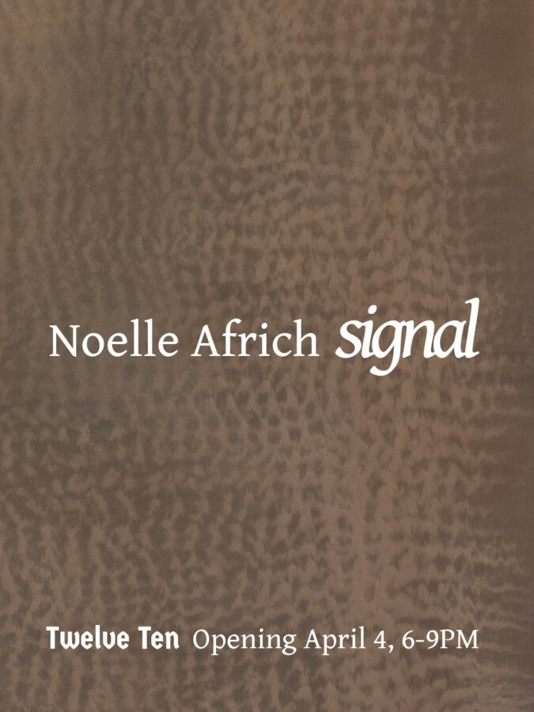

Noelle Africh: Signal
Twelve Ten Gallery is thrilled to present Signal, an exhibition by Noelle Africh. For their solo presentation, Africh explores the mutability of distemper, a medium historically associated with decorative painting, but here transformed into an opaque surface through which the artist investigates the emergence of form.
Composed of pigment, chalk and a glue binder, distemper is amongst the earliest traditional painting materials. Its quick preparation and economical application later made it common in scenic painting for theater and architecture. Africh approaches the medium not as a stable historical technique but as a volatile material system, probing the limits of its physical and representational qualities.
Africh’s process begins with the search for an abstract form that can only be known retrospectively. Because distemper must be applied hot to remain fluid, its surface initially appears cloudy and unstable, resisting clear definition. The artist intensifies this uncertainty through experimental methods that reactivate the surface as it begins to cure. Each intervention alters the field while simultaneously obscuring its effects, leaving the image to unfold through a sequence of partial revelations. The painting develops from these contingent trajectories, only emerging in the last instance.
Yet the ambiguous forms that emerge are not arbitrary. In mathematics, a generic property is one that holds for almost all configurations of a system, while non-generic cases arise only under special conditions. Human perception is acutely sensitive to such rare configurations. In information theory, a signal describes the recognition of meaningful structure within noise—the moment when a figure becomes perceptible against the field from which it arises.
The mathematician René Thom extended these ideas to living systems through a topology of morphogenesis and the development of catastrophe theory, a branch of dynamical systems theory that studies how gradual changes in underlying parameters can produce sudden qualitative shifts in form. Africh, also trained as a mathematician, approaches painting as a parallel inquiry into emergence: a way of tracing how latent structures surface from unstable material conditions and how perceived order arises from uncertainty.
Distemper’s spectral qualities introduce a temporal dimension to this process, its opaque and luminous surface evoking what Jacques Derrida described as “hauntology”, the persistent trace of lost futures within the present. Once used to construct theatrical illusions and architectural ornament, the medium carries the residue of its history and utopian aspirations. Africh’s paintings treat the surface as a field where such traces linger and forms appear less as fixed images than as signals surfacing from the submerged memory of the material itself.
Noelle Africh (b. 1992 Chicago, IL) lives and works in Chicago, IL. They received an MFA in Painting and Drawing from The School of the Art Institute of Chicago and a Bachelor of Science degree in Mathematics from the University of Illinois in Urbana-Champaign. Solo exhibitions include “Signal”, Twelve Ten (Chicago, IL), “Superstition”, Slow Dance (Chicago, IL) and “Loomer”, SHED Projects (Cleveland, OH). They have also participated in many group exhibitions including at Galerie Gisela Clement (Bonn, Germany), RUSCHWOMAN (Chicago, IL), Hyde Park Art Center (Chicago, IL), The Plan (Chicago, IL), The Green Gallery – West (Milwaukee, WI), and Patient Info (Chicago, IL), among others. They have a forthcoming two-person at No31 (Duns, Scotland) in 2026.